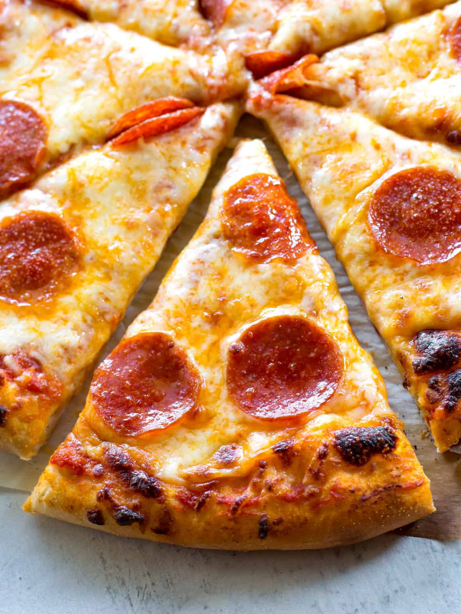

Pizza by Tasty
Homemade Pizza Recipe

How to Make Pizza
Making homemade pizza dough can sound like a lot of work, but it’s so worth the bragging rights. The dough itself requires few ingredients and just a little bit of rising and rest time. While you wait for the dough to be ready, you can get to work prepping your tomato sauce, chopping fresh vegetables, or grating the cheese you’ll put on top. Bake for 15 minutes, garnish with basil (or, let’s be real, more cheese), and enjoy showing off your way-better-than-takeout creation.
Ingredients
- 2 ½ cups warm water(600 mL)
- 1 teaspoon sugar
- 2 teaspoons active dry yeast
- 7 cups all-purpose flour(875 g), plus more for dusting
- 6 tablespoons extra virgin olive oil, plus more for greasing
- 1 ½ teaspoons kosher salt
- ¼ cup semolina flour(30 g)
Optional Toppings
TOMATO SAUCE
- 28 oz canned whole tomatoes(795 g)
- 1 tablespoon kosher salt
MARGHERITA
- tomato sauce
- fresh mozzarella cheese, torn into small pieces
- fresh basil leaf
TASTY'S BIANCA
- extra virgin olive oil
- fresh mozzarella cheese, torn into small pieces
- ricotta cheese
- fresh basil pesto
- dried oregano
PEPPERONI
- tomato sauce
- fresh mozzarella cheese, torn into small pieces
- spicy pepperoni slice
- freshly grated parmesan cheese
Steps
- “Bloom” the yeast by sprinkling the sugar and yeast in the warm water. Let sit for 10 minutes, until bubbles form on the surface.